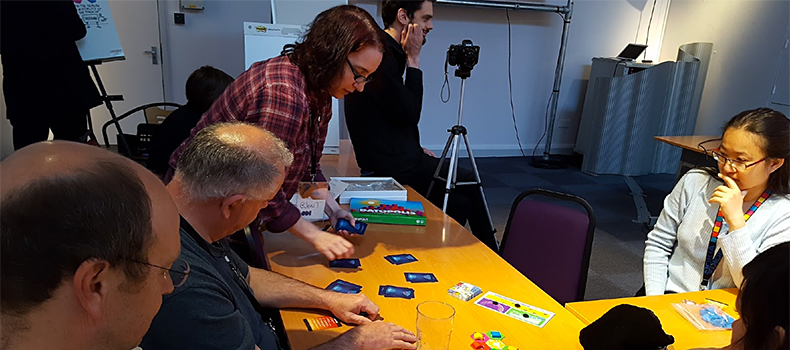

You can now buy your own copy of Datopolis, the open data board game
Today the beta version of Datopolis, our open data board game, goes on sale via Gamecrafter for two weeks. Its creators Ellen Broad and Jeni Tennison tell the story behind it, how it was made and what you can expect from buying your very own copy.
By Ellen Broad and Jeni Tennison
Today we’re making the beta version of Datopolis, our open data board game, available for sale for two weeks. Don’t miss out!
 Playing Datopolis at Open Data Camp, image by Mark Braggins
What is Datopolis?
Datopolis is a board game about building things – services, websites, devices, apps and research – using closed and open data. It’s set in a town called Sheridan, which is gradually declining as shops close, teachers quit, hedgehogs go extinct and pollution rises. The tools that players build contribute to making Sheridan a healthier, wealthier, happier place to live.
There’s a short version and a long version of Datopolis. The short version is useful for team workshops and away days – it can be played within 20-30 minutes, and gets people comfortable talking to each other and negotiating to build tools with data. The longer version is for people who really enjoy playing board games – it has added role cards, plenty of bad things happening in Sheridan to contend with, and generally more complexity.
We’ve been working on Datopolis for almost 18 months now, and have been taken aback by the enthusiasm and energy from people around the world wanting to try it out.
We’ve been testing our first boxed prototype of Datopolis in the UK at events like Open Data Camp in Bristol, the Cabinet Office and National Audit Office. We’ve also seen people printing and playing Datopolis themselves using the components on GitHub around the world, in China, France and New Zealand.
Tested @datopolis at SH open data camp today. pic.twitter.com/FUvphgmS0P
— Open Knowledge China (@OKFNCN) June 5, 2016
We’ve used the feedback and suggestions from people playing Datopolis remotely and with us in London to make the game even better. Here’s feedback from one of our playtesters, Lydia Nicholas, Senior Researcher in Collective Intelligence at Nesta. We’ve left in her comments on the game mechanic, to give you a feel of the game:
Overall everyone was very impressed, particularly with the way the mechanic sets you up to make interesting tradeoffs. It's great that the short version plays so fast because contrasts between games raised a few talking points.
Our first playthrough was very open; because we played tiles face up and close together there ended up being with very little trading. It was very easy to build any kind of app, except democracy, where the cards turned up late- and then the one yellow tile, laid adjacent to 3 other open tiles prompted a flurry of complex 3-part apps. It felt very like an open, developed marketplace.
The second time we all initially played our tiles mostly closed, did complicated multilayered deals, and deliberately laid cards in long lines or in ways we knew would be hard for others to reuse- so the our plays naturally skewed towards either stockpiling tiles and laying them all down at once to playing closed systems, or using the very few central, open datasets: everyone made several simple transport apps, regardless of any needs or interests which their other hastily discarded and redrawn cards represented.
Rather than the second game being a failure, the differences made us all even more interested in the possibilities of the game as a tool for playing through innovation scenarios. We all had fun and loved in particular the naming round being enshrined in the turn order. There were some terrible, very tweetable puns.
Why might I buy Datopolis?
We’ve seen Datopolis used for team away days, data events and exhibitions, and to help people communicate the value of data inside their organisations. We also hope it contains enough strategy to be fun for board game lovers too!
Datopolis is openly licensed, so people can change the game components, introduce new rules, translate it, localise it to their sector or geographic region. Play testers have talked to us about adapting it to explain their own organisation’s sector and potential impact from data.
Buying Datopolis
We’re making Datopolis available for sale for two weeks via Gamecrafter, after lots of people asked how they could get a copy of the prototype. Datopolis (beta) costs $66 USD via Gamecrafter and comes with all the game components you need to get underway, beautifully boxed with cover designs by London-based design consultancy Folk Labs. We haven’t added any margin - this price simply reflects manufacturing costs from Gamecrafter. Unfortunately there’s also fairly pricey shipping fees (GameCrafter is based in the US).
Hey everyone look how lovely @datopolis, our #opendata #boardgame looks 🙂 cc co-creator @JeniT + designer @djwesto pic.twitter.com/5tC1sFhKG4
— Ellen Broad (@ellenbroad) May 5, 2016
For an individual, buying Datopolis might be out of reach, but for an organisation or consultant looking for new workshop materials and ways to engage teams around data, it’s a worthwhile investment. If it is too pricey for you, the game components are openly licensed and available from GitHub so you can still print and play yourself.
We don’t know if we’ll produce another boxed version of Datopolis, because we’re not sure what level of interest there is in it yet and so the right way to take it forward. This might be your only chance to own it for yourself!
What next for Datopolis
We’ll still be making changes to and improving Datopolis. The hardest part has been creating the instructions, and making the game rules clear and comprehensible for anyone picking up the game for the first time. We still want your feedback in testing out Datopolis. What instructions make sense? What rules would you add? Do you want to make your own version of Datopolis?
We’d love to see photos and videos of you playing your own copy of Datopolis. Share them with us via Twitter at @datopolis or email [email protected].
Finally, we want to say a huge thank you to everyone in and outside the UK who has contributed to getting Datopolis to this point, including Phil Lang, Adam Sven-Johnson, Leigh Dodds, Ulrich Atz, Peter Wells, James Cattell, Adam Hinchliff, Jamie Fawcett, Martin Howitt, Lucy Knight, Kevin Lewis, Richard Norris, Emily Vacher, Guy Levin, Steve Anderson, Irina Bolshevsky, Laura Koesten, Simon Bullmore, John Sheridan, Gavin Freeguard, Stephen Gates, Lydia Nicholas, Sian Thomas, Cam Findlay … and everyone at Open Data Institute. We are sorry if we have missed your name off.
And a very special thank you to Folk Labs, who put in lots of hard work illustrating the game, and without whom Datopolis wouldn’t look so pretty.